Attention Visualization Guide¶
This guide covers all attention visualization and analysis capabilities in mlxterp.
Overview¶
mlxterp captures attention weights during model tracing, enabling:
- Attention heatmaps: Visualize which tokens attend to which
- Pattern detection: Automatically identify head types (induction, previous token, etc.)
- Multi-head analysis: Compare patterns across layers and heads
- Custom analysis: Build your own attention-based analyses with custom pattern functions
- Interactive exploration: CircuitsViz-style interactive visualizations for Jupyter and HTML
Quick Start¶
from mlxterp import InterpretableModel
from mlxterp.visualization import (
get_attention_patterns,
attention_heatmap,
attention_from_trace,
detect_head_types,
AttentionVisualizationConfig,
)
# Load model
model = InterpretableModel("mlx-community/Llama-3.2-1B-Instruct-4bit")
# Trace to capture attention
with model.trace("The cat sat on the mat") as trace:
pass
# Get attention patterns
patterns = get_attention_patterns(trace)
tokens = model.to_str_tokens("The cat sat on the mat")
# Create visualization
config = AttentionVisualizationConfig(colorscale="Blues", mask_upper_tri=True)
fig = attention_heatmap(patterns[5], tokens, head_idx=0, config=config)
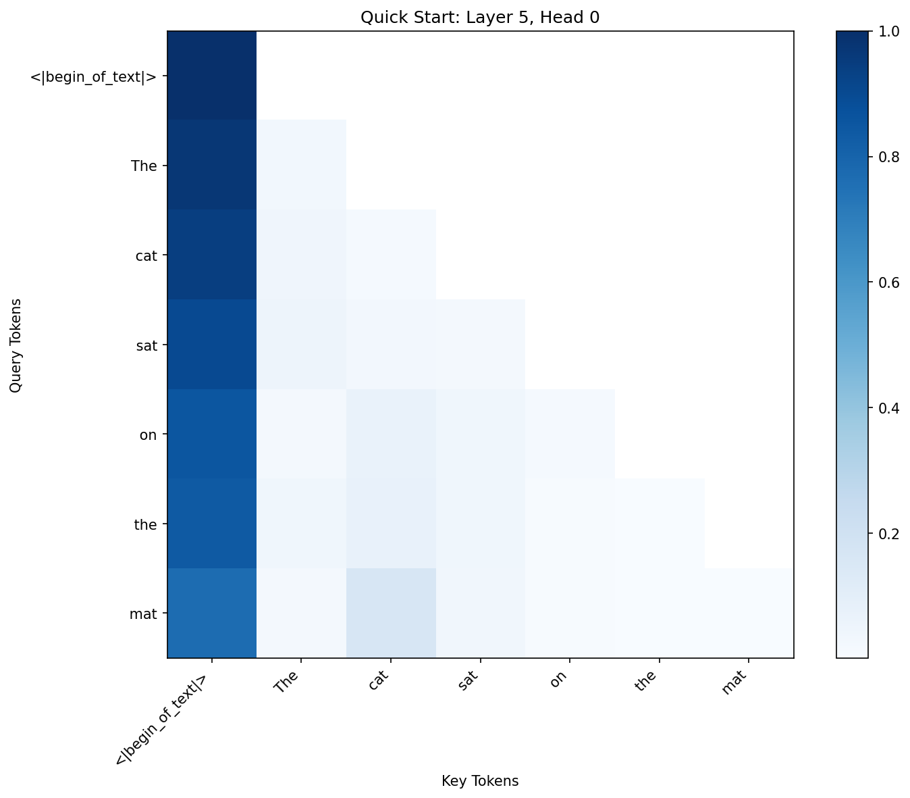
Figure 1: Basic attention heatmap showing Layer 5, Head 0 attention pattern. The y-axis shows query positions (source tokens), while the x-axis shows key positions (target tokens). Darker blue indicates higher attention weights.
Extracting Attention Patterns¶
Basic Extraction¶
from mlxterp.visualization import get_attention_patterns
with model.trace(text) as trace:
pass
# Get all layers
patterns = get_attention_patterns(trace)
print(f"Captured {len(patterns)} layers")
# Get specific layers
patterns = get_attention_patterns(trace, layers=[0, 5, 10])
Understanding Pattern Shapes¶
# patterns[layer_idx] has shape: (batch, heads, seq_q, seq_k)
pattern = patterns[0]
print(f"Shape: {pattern.shape}")
# (1, 32, 6, 6) for batch=1, 32 heads, 6 tokens
# Access specific head
head_0 = pattern[0, 0] # First batch, first head
# Shape: (seq_q, seq_k) = (6, 6)
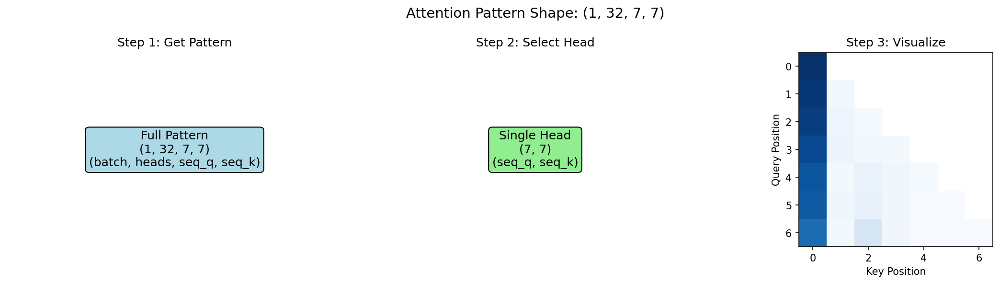
Figure 2: Understanding attention tensor dimensions. The 4D tensor (batch, heads, seq_q, seq_k) allows access to individual attention heads for analysis.
Token Strings¶
Use to_str_tokens to get readable token labels:
tokens = model.to_str_tokens("Hello world")
print(tokens) # ['<|begin_of_text|>', 'Hello', ' world']
# Also works with token IDs
token_ids = model.encode("Hello world")
tokens = model.to_str_tokens(token_ids)
Visualization Functions¶
Single Heatmap¶
from mlxterp.visualization import attention_heatmap, AttentionVisualizationConfig
config = AttentionVisualizationConfig(
colorscale="Blues", # Matplotlib colormap name
mask_upper_tri=True, # Mask future positions (causal)
figsize=(8, 6)
)
fig = attention_heatmap(
patterns[5], # Attention from layer 5
tokens, # Token labels
head_idx=0, # Which head to show
title="Layer 5, Head 0",
backend="matplotlib", # or "plotly", "interactive"
config=config
)
Colorscale Options¶
Different colorscales highlight different attention patterns:
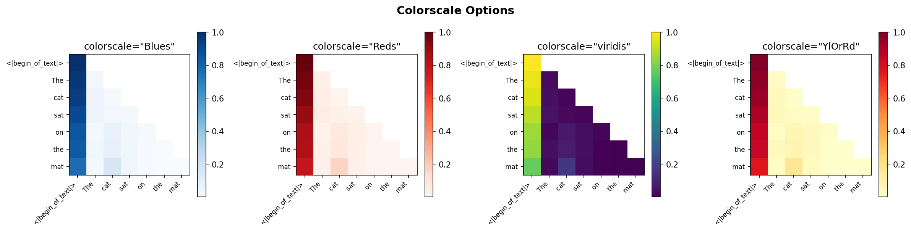
Figure 3: Comparison of colorscale options. Choose based on your visualization needs: Blues for standard analysis, Reds for emphasis, viridis for perceptually uniform gradients, YlOrRd for heatmap-style displays.
Grid of Multiple Heads¶
from mlxterp.visualization import attention_from_trace, AttentionVisualizationConfig
config = AttentionVisualizationConfig(
backend="matplotlib",
colorscale="Blues",
mask_upper_tri=True
)
fig = attention_from_trace(
trace,
tokens,
layers=[0, 4, 8, 12], # 4 layers
heads=[0, 1, 2, 3], # 4 heads per layer
mode="grid", # Grid layout
head_notation="LH", # "L5H3" style titles
config=config
)
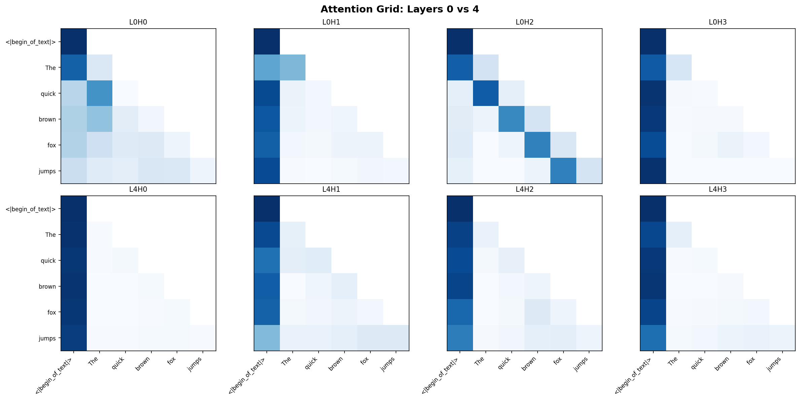
Figure 4: Grid visualization comparing attention patterns across layers (rows) and heads (columns). Notice how Layer 0 heads show more diffuse patterns, while Layer 4 heads show more specialized attention.
Visualization Backends¶
mlxterp supports multiple backends:
| Backend | Best For | Installation |
|---|---|---|
matplotlib |
Publication figures, local use | Included |
plotly |
Interactive exploration | pip install plotly |
interactive |
Jupyter notebooks, web (our custom viz) | Included |
# Auto-detect best available
config = AttentionVisualizationConfig(backend="auto")
# Force specific backend
config = AttentionVisualizationConfig(backend="plotly")
# Use our custom interactive visualization
config = AttentionVisualizationConfig(backend="interactive")
Interactive Visualization¶
mlxterp includes a custom-built interactive visualization system inspired by CircuitsViz, with no external dependencies. This provides a rich exploration experience for attention patterns.
Live Demo¶
Try the interactive visualization below (hover over tokens to see attention connections):
Features¶
The interactive visualization includes:
- Token bar with hover highlighting: Hover over any token to instantly see attention connections - no click required! Click to lock the selection.
- Head selector grid: Thumbnail previews of all heads - hover to preview, click to lock
- Main attention heatmap: Full-size view of the selected head's attention pattern
- Source ↔ Destination toggle: Switch between "what does this token attend to" and "what attends to this token"
- Layer slider: Navigate between layers
- Cross-layer attention flow: When hovering over a token, see how its attention evolves across all layers
Quick Start - Interactive¶
from mlxterp import InterpretableModel
from mlxterp.visualization import (
get_attention_patterns,
interactive_attention,
display_interactive_attention,
save_interactive_attention,
InteractiveAttentionConfig,
)
# Load model and trace
model = InterpretableModel("mlx-community/Llama-3.2-1B-Instruct-4bit")
text = "Her name was Alex Hart. Tomorrow at lunch time Alex"
with model.trace(text) as trace:
pass
tokens = model.to_str_tokens(text)
patterns = get_attention_patterns(trace)
# Option 1: Display in Jupyter notebook
display_interactive_attention(patterns, tokens)
# Option 2: Save as standalone HTML file
save_interactive_attention(patterns, tokens, "attention_explorer.html")
# Option 3: Get HTML string for custom use
html = interactive_attention(patterns, tokens)
Configuration¶
config = InteractiveAttentionConfig(
title="My Attention Analysis", # Title shown at top
heatmap_size=400, # Size of main heatmap in pixels
)
save_interactive_attention(patterns, tokens, "output.html", config=config)
Using the Interactive Interface¶
-
Explore heads: Hover over thumbnails in the head selector to preview different heads. Click to lock a head for detailed analysis.
-
Highlight a token: Simply hover over any token in the token bar to instantly see:
- Its attention pattern highlighted in the heatmap
- Attention weights on other tokens (color intensity = attention strength)
-
Cross-layer attention flow showing how this token's attention evolves
-
Lock a token: Click any token to lock the selection - it will stay highlighted even when you move the mouse away. Click again to unlock. The info panel shows
[LOCKED]when a token is locked. -
Toggle direction: Use the "Source → Dest" / "Source ← Dest" buttons to switch between:
- Source → Dest: What does the selected token attend to?
-
Source ← Dest: What tokens attend to the selected token?
-
Navigate layers: Use the layer slider to see how attention patterns change across layers. Click on any layer in the cross-layer flow to jump to it.
-
Hover for details: Hover over the heatmap to see exact attention percentages between token pairs.
Direct from Trace¶
For convenience, you can create the visualization directly from a trace:
from mlxterp.visualization import interactive_attention_from_trace
with model.trace(text) as trace:
pass
html = interactive_attention_from_trace(
trace,
tokens,
layers=[0, 5, 10, 15], # Optional: select specific layers
)
Embedding in Documentation¶
The generated HTML is self-contained and can be: - Opened directly in any browser - Embedded in Jupyter notebooks - Included in web-based documentation - Shared as standalone files
Pattern Detection¶
Built-in Head Types¶
mlxterp includes detectors for common attention head types discovered in mechanistic interpretability research:
| Type | Description | Score Function | Typical Location |
|---|---|---|---|
previous_token |
Attends to position i-1 | previous_token_score() |
Early layers |
first_token |
Attends to position 0 (BOS) | first_token_score() |
All layers |
current_token |
Attends to self (diagonal) | current_token_score() |
Various |
induction |
Pattern completion (A B ... A → B) | induction_score() |
Middle-late layers |
Detecting Head Types¶
from mlxterp.visualization import detect_head_types
head_types = detect_head_types(
model,
"The quick brown fox jumps over the lazy dog",
threshold=0.3,
layers=[0, 5, 10, 15] # Optional: specific layers
)
print("Head Types Found:")
for head_type, heads in head_types.items():
if heads:
print(f" {head_type}: {len(heads)} heads")
for layer, head in heads[:3]:
print(f" L{layer}H{head}")
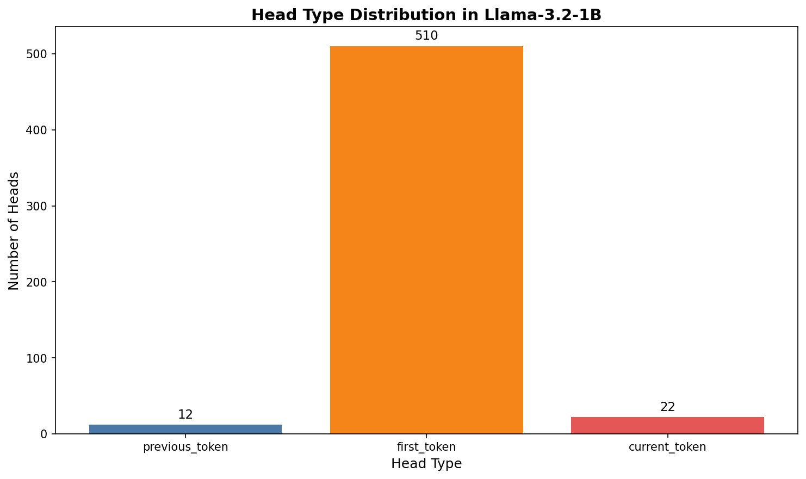
Figure 5: Distribution of detected head types in Llama-3.2-1B. First token (BOS) heads dominate, which is typical for LLMs using BOS token as a "no-op" attention sink.
Previous Token Heads¶
Previous token heads form the foundation for induction. They appear primarily in early layers:
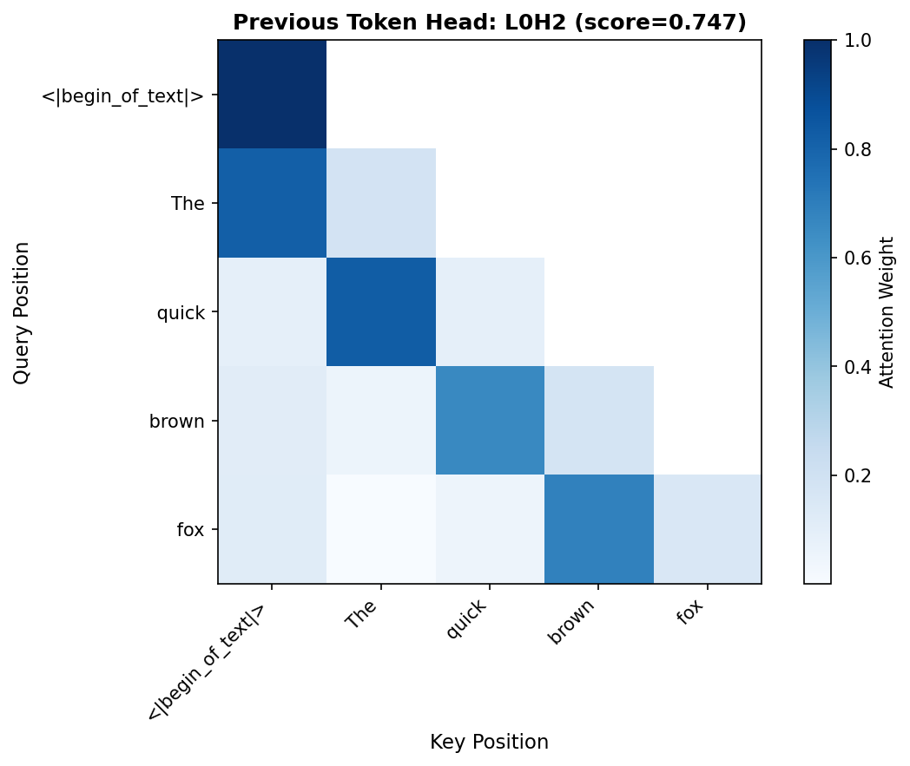
Figure 6: Example previous token head (L0H2, score=0.75). The strong sub-diagonal pattern shows each position primarily attending to the immediately preceding token.
First Token (BOS) Heads¶
First token heads attend strongly to position 0 (beginning of sequence):
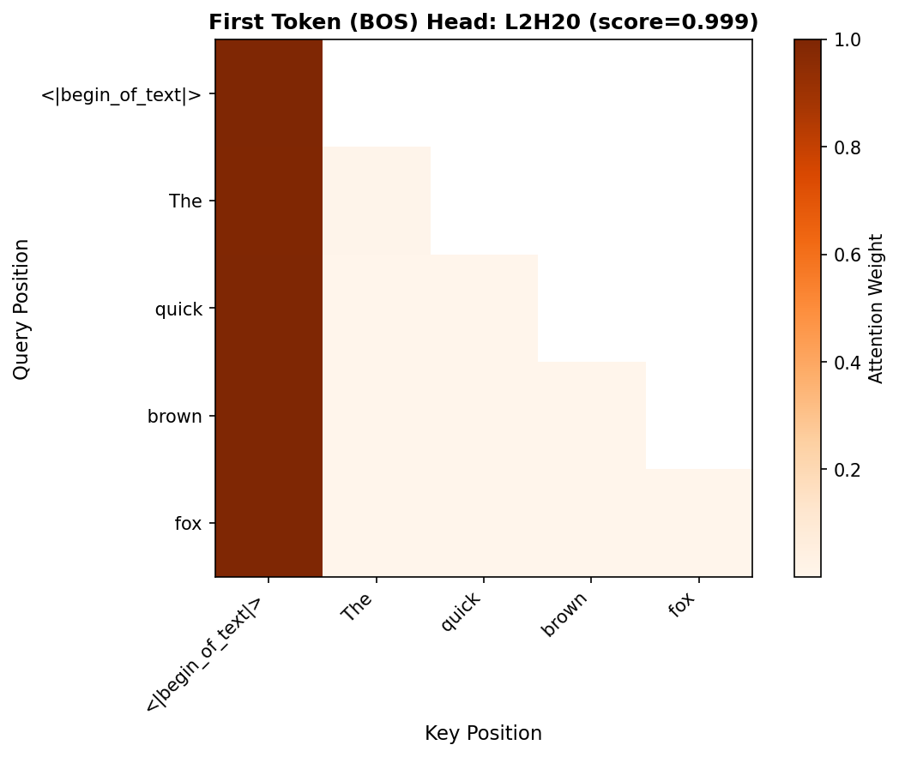
Figure 7: First token head (L2H20, score=0.999). The first column dominates, showing nearly all positions attend strongly to the BOS token. This acts as an attention "sink" for tokens that don't need to attend elsewhere.
Detecting Induction Heads¶
For accurate induction head detection, use repeated random sequences:
from mlxterp.visualization import detect_induction_heads
induction_heads = detect_induction_heads(
model,
n_random_tokens=50, # Length of random sequence
n_repeats=2, # Repeat twice
threshold=0.3, # Score threshold
seed=42 # Reproducibility
)
print(f"Found {len(induction_heads)} induction heads")
for head in induction_heads[:5]:
print(f" L{head.layer}H{head.head}: {head.score:.3f}")
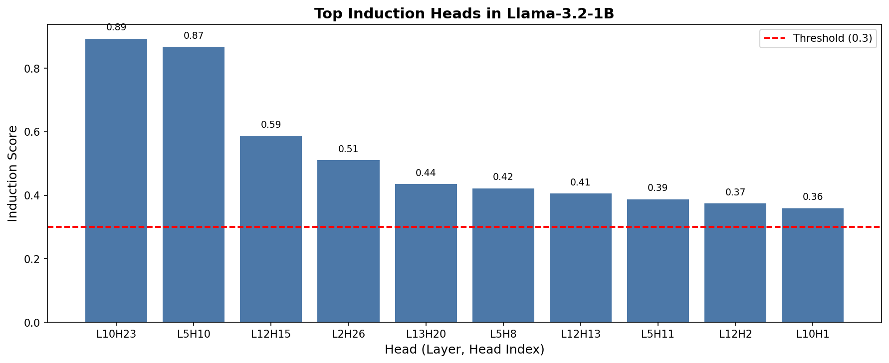
Figure 8: Top induction heads in Llama-3.2-1B detected using repeated random tokens. Heads above the threshold (red line) show strong induction behavior.
Computing Pattern Scores¶
from mlxterp.visualization import (
induction_score,
previous_token_score,
first_token_score,
)
import numpy as np
# Get a single head's pattern
head_pattern = patterns[5][0, 3] # Layer 5, batch 0, head 3
# Compute scores
prev_score = previous_token_score(head_pattern)
first_score = first_token_score(head_pattern)
print(f"Previous token: {prev_score:.3f}")
print(f"First token: {first_score:.3f}")
# Induction score requires sequence length
ind_score = induction_score(head_pattern, seq_len=5)
print(f"Induction: {ind_score:.3f}")
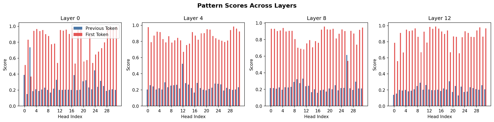
Figure 9: Pattern scores across layers. Blue bars show previous token scores, red bars show first token scores. Early layers (0) have more heads with high first-token scores, while the pattern varies in later layers.
Using AttentionPatternDetector¶
For custom analysis with configurable thresholds:
from mlxterp.visualization import AttentionPatternDetector
detector = AttentionPatternDetector(
induction_threshold=0.4,
previous_token_threshold=0.5,
first_token_threshold=0.3,
current_token_threshold=0.3
)
# Analyze a head
scores = detector.analyze_head(head_pattern)
print(f"All scores: {scores}")
# Classify
types = detector.classify_head(head_pattern)
print(f"Classification: {types}")
Custom Pattern Detection¶
The pattern detection system is fully extensible. You can define custom patterns to detect any attention behavior you observe in your analysis.
Understanding the Pattern Detection Architecture¶
Pattern detection in mlxterp follows a simple functional design:
- Pattern Scoring Function: A function that takes an attention matrix
(seq_q, seq_k)and returns a score (0-1) - Threshold: A cutoff value to classify heads as exhibiting the pattern
- Search: Iterate over heads and filter by threshold
Creating Custom Pattern Scores¶
Define any pattern by writing a scoring function:
import numpy as np
def diagonal_score(pattern):
"""Score for attention to self (main diagonal).
High scores indicate the head attends primarily to the current position.
"""
pattern = np.array(pattern)
return float(np.mean(np.diag(pattern)))
def anti_diagonal_score(pattern):
"""Score for attention to positions in reverse order.
Detects heads that attend to the end of the sequence from the beginning.
"""
pattern = np.array(pattern)
return float(np.mean(np.diag(np.fliplr(pattern))))
def local_window_score(pattern, window_size=3):
"""Score for attention within a local window.
Detects heads that focus on nearby tokens (local attention pattern).
"""
pattern = np.array(pattern)
n = pattern.shape[0]
score = 0.0
count = 0
for i in range(n):
for j in range(max(0, i - window_size), min(n, i + 1)):
score += pattern[i, j]
count += 1
return score / count if count > 0 else 0.0
def sparse_attention_score(pattern, sparsity_threshold=0.1):
"""Score for sparse attention patterns.
High scores indicate the head concentrates attention on few positions.
"""
pattern = np.array(pattern)
# Count positions with attention > threshold
sparse_count = np.sum(pattern > sparsity_threshold, axis=1)
# Lower count = more sparse = higher score
max_positions = pattern.shape[1]
sparsity = 1.0 - (np.mean(sparse_count) / max_positions)
return float(sparsity)
Using Custom Patterns with find_attention_pattern¶
from mlxterp.visualization.patterns import find_attention_pattern
# Find all heads matching your custom pattern
diagonal_heads = find_attention_pattern(
model,
"The quick brown fox jumps over the lazy dog",
pattern_fn=diagonal_score,
threshold=0.3
)
print(f"Found {len(diagonal_heads)} diagonal attention heads")
for layer, head, score in diagonal_heads[:5]:
print(f" L{layer}H{head}: {score:.3f}")
Creating Composite Patterns¶
Combine multiple pattern scores for complex detection:
def induction_plus_previous_score(pattern, seq_len=None):
"""Detect heads that are both induction AND previous-token heads.
This combination is characteristic of the two-step induction mechanism.
"""
from mlxterp.visualization import induction_score, previous_token_score
ind_score = induction_score(pattern, seq_len=seq_len)
prev_score = previous_token_score(pattern)
# Both must be present - use geometric mean
return float(np.sqrt(ind_score * prev_score))
def content_vs_position_score(pattern):
"""Classify whether head uses content-based or position-based attention.
Returns score > 0.5 for content-based, < 0.5 for position-based.
Useful for understanding attention mechanisms.
"""
pattern = np.array(pattern)
# Position-based: similar patterns across rows
row_variance = np.var(pattern, axis=0).mean()
# Content-based: different patterns across rows
col_variance = np.var(pattern, axis=1).mean()
# Normalize
total = row_variance + col_variance
if total < 1e-6:
return 0.5
return float(col_variance / total)
Building a Custom Pattern Detector Class¶
For reusable pattern detection, create a custom detector:
from dataclasses import dataclass
from typing import List, Tuple, Callable, Dict
import numpy as np
@dataclass
class PatternMatch:
"""Result of pattern detection."""
layer: int
head: int
score: float
pattern_name: str
class CustomPatternDetector:
"""Extensible pattern detector for attention analysis.
Add your own patterns and detect them across model heads.
"""
def __init__(self):
self.patterns: Dict[str, Tuple[Callable, float]] = {}
def register_pattern(self, name: str, score_fn: Callable, threshold: float = 0.3):
"""Register a new pattern for detection.
Args:
name: Human-readable pattern name
score_fn: Function (attention_matrix) -> float score in [0, 1]
threshold: Minimum score to classify as this pattern
"""
self.patterns[name] = (score_fn, threshold)
def detect_all(self, model, text: str, layers: List[int] = None) -> Dict[str, List[PatternMatch]]:
"""Detect all registered patterns across model heads.
Returns:
Dict mapping pattern names to lists of matching heads
"""
from mlxterp.visualization import get_attention_patterns
with model.trace(text) as trace:
pass
patterns = get_attention_patterns(trace, layers=layers)
results = {name: [] for name in self.patterns}
for layer_idx, layer_attn in patterns.items():
n_heads = layer_attn.shape[1]
for head_idx in range(n_heads):
head_pattern = np.array(layer_attn[0, head_idx])
for pattern_name, (score_fn, threshold) in self.patterns.items():
score = score_fn(head_pattern)
if score >= threshold:
results[pattern_name].append(
PatternMatch(layer_idx, head_idx, score, pattern_name)
)
# Sort by score descending
for name in results:
results[name].sort(key=lambda x: x.score, reverse=True)
return results
# Usage example
detector = CustomPatternDetector()
# Register built-in patterns
from mlxterp.visualization import previous_token_score, first_token_score
detector.register_pattern("previous_token", previous_token_score, threshold=0.5)
detector.register_pattern("first_token", first_token_score, threshold=0.3)
# Register custom patterns
detector.register_pattern("diagonal", diagonal_score, threshold=0.3)
detector.register_pattern("local_window", local_window_score, threshold=0.4)
detector.register_pattern("sparse", sparse_attention_score, threshold=0.7)
# Detect all patterns
results = detector.detect_all(model, "The quick brown fox jumps over the lazy dog")
for pattern_name, matches in results.items():
if matches:
print(f"\n{pattern_name}: {len(matches)} heads")
for match in matches[:3]:
print(f" L{match.layer}H{match.head}: {match.score:.3f}")
Visualizing Custom Patterns¶
Create visualizations for your detected patterns:
def visualize_pattern_distribution(detector_results, model_name="Model"):
"""Visualize the distribution of custom patterns across a model."""
import matplotlib.pyplot as plt
pattern_counts = {name: len(matches) for name, matches in detector_results.items()}
fig, ax = plt.subplots(figsize=(10, 6))
bars = ax.bar(pattern_counts.keys(), pattern_counts.values())
ax.set_ylabel("Number of Heads")
ax.set_xlabel("Pattern Type")
ax.set_title(f"Custom Pattern Distribution in {model_name}")
for bar, count in zip(bars, pattern_counts.values()):
ax.text(bar.get_x() + bar.get_width()/2, bar.get_height() + 0.5,
str(count), ha='center', va='bottom')
plt.tight_layout()
return fig
def plot_pattern_by_layer(detector_results, pattern_name, n_layers=16):
"""Show where a specific pattern appears across layers."""
import matplotlib.pyplot as plt
import numpy as np
matches = detector_results.get(pattern_name, [])
layer_counts = np.zeros(n_layers)
layer_max_scores = np.zeros(n_layers)
for match in matches:
layer_counts[match.layer] += 1
layer_max_scores[match.layer] = max(layer_max_scores[match.layer], match.score)
fig, (ax1, ax2) = plt.subplots(1, 2, figsize=(14, 5))
# Count by layer
ax1.bar(range(n_layers), layer_counts)
ax1.set_xlabel("Layer")
ax1.set_ylabel("Number of Heads")
ax1.set_title(f"{pattern_name} - Count by Layer")
# Max score by layer
ax2.bar(range(n_layers), layer_max_scores, color='orange')
ax2.set_xlabel("Layer")
ax2.set_ylabel("Max Score")
ax2.set_title(f"{pattern_name} - Max Score by Layer")
plt.tight_layout()
return fig
Pattern Detection Best Practices¶
- Normalize scores to [0, 1]: Makes threshold selection consistent
- Test on diverse inputs: Patterns may vary by input type
- Validate with ablation: Confirm detected heads are causally important
- Document your patterns: Future you will thank you
Advanced Usage¶
Analyzing Specific Token Relationships¶
# Which tokens does position 5 attend to?
attn_from_pos_5 = head_pattern[5, :]
print(f"Position 5 attends to: {np.argsort(attn_from_pos_5)[::-1][:3]}")
# What attends to position 2?
attn_to_pos_2 = head_pattern[:, 2]
print(f"Positions attending to 2: {np.where(attn_to_pos_2 > 0.1)[0]}")
Comparing Across Prompts¶
def compare_attention(model, prompts, layer, head):
"""Compare attention patterns across different prompts."""
import matplotlib.pyplot as plt
fig, axes = plt.subplots(1, len(prompts), figsize=(5*len(prompts), 4))
for idx, prompt in enumerate(prompts):
with model.trace(prompt) as trace:
pass
patterns = get_attention_patterns(trace, layers=[layer])
tokens = model.to_str_tokens(prompt)
attn = patterns[layer][0, head]
mask = np.triu(np.ones_like(attn), k=1)
attn_masked = np.where(mask, np.nan, attn)
ax = axes[idx]
ax.imshow(attn_masked, cmap='Blues')
ax.set_xticks(range(len(tokens)))
ax.set_xticklabels(tokens, rotation=45, ha='right', fontsize=8)
ax.set_yticks(range(len(tokens)))
ax.set_yticklabels(tokens, fontsize=8)
ax.set_title(f'"{prompt[:20]}..."')
plt.tight_layout()
return fig
# Compare attention across prompts
fig = compare_attention(
model,
["The cat sat", "A dog ran", "My car drove"],
layer=5,
head=0
)
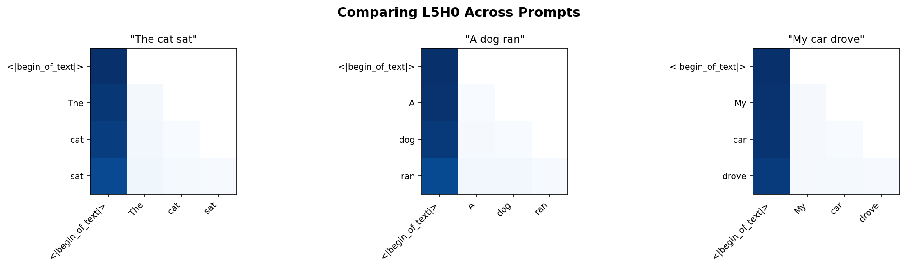
Figure 10: Comparing the same head (L5H0) across different prompts. This reveals whether attention patterns are content-dependent or primarily structural.
Aggregating Across Heads¶
def layer_attention_summary(patterns, layer_idx):
"""Summarize attention across all heads in a layer."""
attn = patterns[layer_idx] # (batch, heads, seq_q, seq_k)
# Mean across heads
mean_attn = np.mean(attn[0], axis=0)
# Max across heads
max_attn = np.max(attn[0], axis=0)
return mean_attn, max_attn
mean_attn, max_attn = layer_attention_summary(patterns, 5)
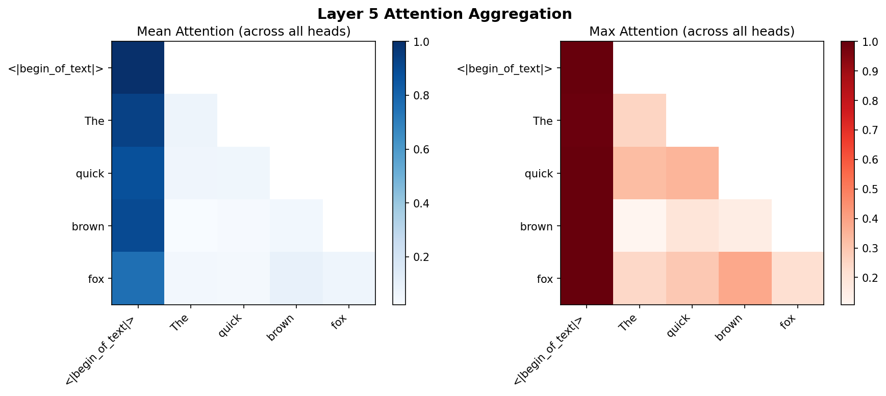
Figure 11: Aggregated attention in Layer 5. Left: Mean attention across all 32 heads shows the average behavior. Right: Max attention shows where any head strongly attends, highlighting important token relationships.
Best Practices¶
1. Use Random Tokens for Induction Detection¶
# Good: Random tokens eliminate semantic confounds
induction_heads = detect_induction_heads(model, n_random_tokens=50)
# Less reliable: Natural text has many patterns
head_types = detect_head_types(model, "natural text")
2. Check Multiple Layers¶
# Analyze pattern evolution through layers
for layer in [0, 4, 8, 12, 15]:
types = detect_head_types(model, text, layers=[layer])
print(f"Layer {layer}: {sum(len(v) for v in types.values())} classified heads")
3. Use Appropriate Thresholds¶
# Start conservative, then relax
for threshold in [0.5, 0.4, 0.3, 0.2]:
heads = detect_induction_heads(model, threshold=threshold)
print(f"Threshold {threshold}: {len(heads)} heads")
4. Validate with Ablation¶
from mlxterp import interventions as iv
# Confirm head importance by ablating it
text = "The cat sat on the mat. The cat"
# Normal
with model.trace(text) as trace:
normal_out = model.output.save()
# Ablated
with model.trace(text, interventions={"model.model.layers.8.self_attn": iv.zero_out}):
ablated_out = model.output.save()
# Compare predictions
normal_pred = model.get_token_predictions(normal_out[0, -1, :], top_k=1)[0]
ablated_pred = model.get_token_predictions(ablated_out[0, -1, :], top_k=1)[0]
print(f"Normal: {model.token_to_str(normal_pred)}")
print(f"Ablated: {model.token_to_str(ablated_pred)}")
Common Issues¶
Memory with Long Sequences¶
For long sequences, attention patterns can be large:
# Shape: (batch, heads, seq_len, seq_len)
# For 32 heads and 1024 tokens: 32 * 1024 * 1024 * 4 bytes = 128MB per layer
# Process specific layers only
patterns = get_attention_patterns(trace, layers=[5, 10])
Causal Masking¶
Upper triangular entries are masked (future positions):
# Always use mask_upper_tri=True for causal models
config = AttentionVisualizationConfig(mask_upper_tri=True)
Tokenization Alignment¶
Ensure tokens match the traced sequence:
text = "Hello world"
with model.trace(text) as trace:
pass
# Use same text for tokenization
tokens = model.to_str_tokens(text) # Correct
# NOT: tokens = model.to_str_tokens("different text")
See Also¶
- Tutorial 5: Induction Heads - Comprehensive induction head analysis
- API Reference: Visualization Module - Complete API documentation
- Activation Patching Guide - Causal intervention techniques